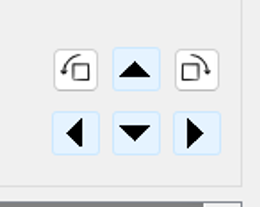
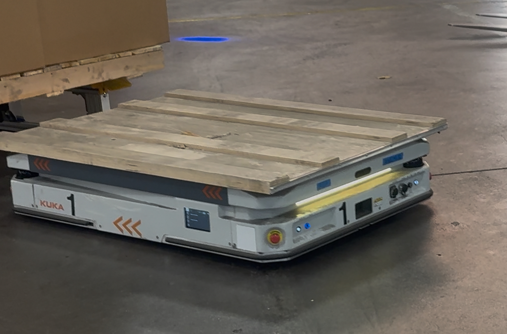
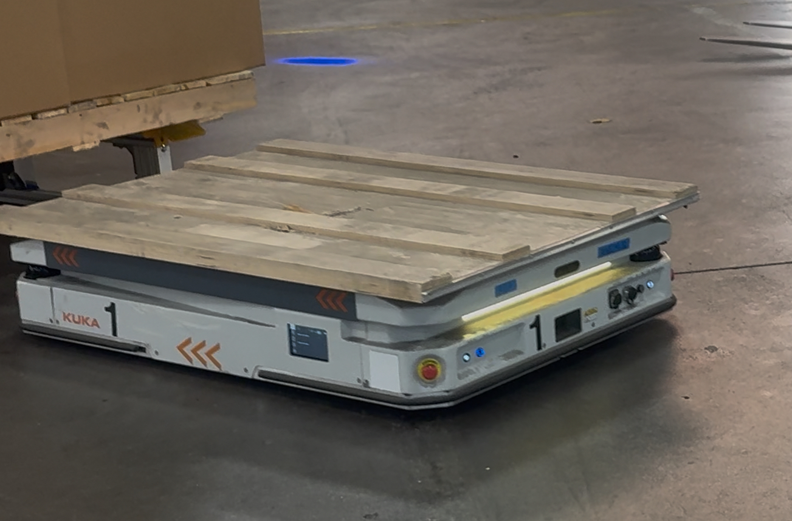

AMR Safety and Troubleshoot Guidelines
AMR Safety Guidelines
Understand AMR Operation
AMR Start Up
AMR Shut Down
AMR Caught on skid and delocalized inside P&D (BN58/BN62)
No Suitable Path / Localization
AMR "Advanced Error" when leaving P&D
No Suitable Path / Localization
Step 1: Wait for Fleet Manager to auto-resolve (may be blocked by another AMR).
Step 2: Does the AMR still need manual help?
Move Mission Troubleshooting:
2a. Connect with KUKA Studio or manual controller.
2b. Move AMR back to the path and ensure proper orientation.
2c. Charging port = back. Move backward when lift is down, forward when raised.
2d. Switch AMR to Auto Mode. Press flashing Start/Reset buttons.
2e. If needed, open Map Monitor to align AMR with path.
3. Switch to Auto Mode – lift should move if close enough to node.
4. If still error, recheck localization and reset again.
Lift Up / Down Mission Troubleshooting:
1. Connect to AMR.
2. Verify localization – reset if needed.
üìå How to Localize an AMR
-
Connect to the AMR via its IP address using KUKA Studio.
-
On the Controller Tab, click Force DebugMode to take the AMR offline.
-
Click on the Navigation Tab at the top.
-
Choose the Localization page on the left.
-
Click Refresh Map and wait for it to load to 100%. Click OK once it completes.
-
If an error appears about the missing map file, click Cancel to ignore.
-
Red spots will appear showing the current localization.
-
Click where the AMR is physically located, drag the black arrow toward the front.
-
Use arrows and rotation tools in the top-right to align black spots with the map.
 -
Click Initialize to send the updated position. Click OK when it hits 100%.
-
Return to the Controller Tab and click Restore AutoMode. Confirm in Map Monitor.
✅ AMR recovered on its own. No further action needed.
❌ Fault not recognized. Please check the error or escalate if unsure.
AMR "Advanced Error" leaving P&D rack
Step 1:Connect to the AMR using KUKA Studio.
Step 2:Click Force DebugMode to use the manual controller. If unable to use the manual controller, use the AMR key to brake release the AMR.
Step 3:Move the AMR forward to a spot on its current travel path. See image for an example
Step 4: Go back to the Controller tab and click Restore AutoMode to switch the AMR back into auto mode. It should continue with its current job.
AMR Shut Down
Step 1: In Kuka Fleet, in Settings tab, turn off Auto park mission then click Update

Step 2: In Kuka Fleet, click an AMR in the map (you can start with AMR 1)
Step 3: In the AMR pop up window, click the Move option.
Step 4: Click on the node you want the AMR(1-6) to park for charging. Note that each Charger is labeled with a number sticker that shows which charger is assigned to each AMR.
a. Send AMR 1 to node 389.Press Dispatch Mission
b. Send AMR 2 to node 388.Press Dispatch Mission
c. Send AMR 3 to node 387.Press Dispatch Mission
d. Send AMR 4 to node 386.Press Dispatch Mission
d. Send AMR 5 to node 385.Press Dispatch Mission
d. Send AMR 6 to node 384.Press Dispatch Mission
Step 5:When the AMR arrives to the charging nodes, Plug in the charger. Wait for the light on the charging block to illuminate a solid red light this means the charging has started. If it doesn’t illuminate solid red, unplug the charger from the outlet and plug it back in again.
Step :Press and release the standby button the AMR will shutdown.
AMR Start Up
Step 1: Unplug the AMR from its charger.
Step 2: Wipe down the cameras and lasers, only use Micro Care ESD cleaning wipes available in the tool crib.
Step 3: Press the Stand-by Button (it should lock into place). Wait for the AMR to boot up and connect to the server — should take 30–60 seconds.
Step 4: When the start button illuminates and starts FLASHING, press it in and release (it should turn solid white or blue).
Step 5: In KUKA Studio → Select the AMR's IP address → Put AMR into Debug mode → Click Int Hardware (let it run through the systems check until the CMD status says "Done") → Press Restore Automode.
Step 6: In KUKA Fleet → Go to Settings → Turn on Auto Park Mission → Click Update (The AMRs should start to move to their parking locations).
AMR Caught on skid and delocalized inside P&D (BN58/BN62)
Step 1:In Kuka Studio, connect to the AMR and click Force DebugMode to put the AMR into debug mode.
Step 2:Have a hilo remove the load sitting on the P&D rack.
Step 3:Manually move AMR back to the approach node (orange sticker on the floor)
Step 4:Relocalize the AMR
Step 5: Once the position is set and has been updated on the AMR, click Restore AutoMode on the controller tab to turn the AMR back online.
AMR Safety Guidelines
FLASHING GREENüü¢ AMR is in motion. Stay clear of its path; it may not stop in time if you cut in front.
SOLID GREENüü¢: AMR is stationary.
FLASHING YELLOW/WHITEüü°: AMR is in its docking process.Safety field is reduced, therefore avoid standing directly in front of or behind the AMR ‚Äî it won‚Äôt detect people or obstacles close to it during docking.


REDüî¥: Safety scanners are faulted. Check for any object blocking the scan field. Remove the obstruction, and the AMR will resume after a few seconds.
PURPLEüü£ : Cameras are detecting an obstacle.Stop and check the area ‚Äî Remove the obstacle, and the AMR will resume after a few seconds.
LIGHTS OFF : AMR is idle and waiting for next mission.
360° Detection: Safety scanners and 3D cameras on the front and rear provide full obstacle coverage around the AMR.
Detection Height Limit: Scanners only detect objects exactly 6.5 inches above the ground — anything higher or lower is not detected
Automatic Stop: If an object enters the scan field, the AMR automatically stops. It resumes a few seconds after the obstacle is removed.
Scan Field Size During Loaded Largest detection zone. Covers the skid (62”x92”) plus 44” in front and 8” on each side. AMR drives forward.
Scan Field Size During Unloaded: Smaller zone for the empty AMR. Includes 44” behind and 8” on each side. AMR drives backward.
Scan Field Size During Docking/Charging:Detection zone is tight, just slightly larger than the AMR body.
Understand AMR Operation
1. AMR 1 & AMR 2 are assigned to Team 6.
2. AMR 5 & AMR 6 are assigned to Team 5.
3. AMR 3 & AMR 4 are shared between Team 5 and Team 6.
IMPORTANT NOTE. Each AMR is linked to specific pickup and drop-off racks that correspond to the assigned team’s area.
⚠️ Note: AMRs cannot be forced to complete jobs for an unassigned team. If the job is not designated for that AMR’s configured team, it will not run.
1. During the day, Auto Charge is enabled. All AMRs will move to the charging station during breaks.
2.At the end of the day, if the AMRs are already above 80–85% SOC, do not need to plug them in; simply power them off.
1. TBD
1. Currently, AMRs 1, 2, and 3 are configured for auto charging during break periods.
2. AMR 4 is not set up to auto charge at this time. Please ensure that only AMRs 1, 2, and 3 are used during breaks to maintain proper charging behavior.
Step 1: The operator uses the interface to send a job. A virtual container is created and reserved on the pickup rack.
Step 2: That pickup location becomes locked and cannot accept new work until an AMR completes the task.
Step 3: WHen an AMR is free, it will drive to the pick up rack. Before enter inside the rack, it will pause on the approach node and uses its scanners to detect the reflectors on the rack. AMR then switches safety field set to docking configuration and you will see the LEDs begin flashing yellow.
Step 4: AMR drives into the rack and raises its lift once underneath the load.
Step 5: AMR moves back out to the pickup approach node with the load on top of it.
Step 6: AMR switches safety field set to the loaded configuration (flashing green) and begins moving to it’s drop off destination.
Step 1: AMR arrives at drop off approach node at the shipping dock's P&D.
Step 2: AMR pauses to wait for feedback from sensor that there is no skid present on the drop off rack. The AMR will sit here and continue to query the sensor until it is cleared.
Step 3: After confirming the rack is free, the AMR will rotate to face the rack and pause to detect the reflectors on the rack legs.AMR switches safety field set to docking configuration and LEDs begin flashing yellow and white.
Step 4: AMR drives into the rack and lowers its lift once inside.
Step 5: AMR moves back out to the pickup approach node after placing the load on the rack.
Step 6: AMR switches safety field set to the default configuration and begins any queued jobs, goes to connect to a charger, or moves back to its park position.